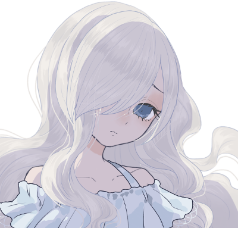

GM : じゃあPC自己紹介からやっていきましょう、お願いします！
新藤亜理紗 : 了解了解！
■PC1：新藤亜理紗
ロイス：柊みなみ
あなたはFHが運営するアイドル事務所、ファム・ファタールに所属するアイドルだ。
柊みなみはあなたが教育係を務めている新人アイドルであり、同じユニットのメンバーでもある。
ある冬の日の夜、あなたは事務所に立ち寄ると、ファンからペアの温泉旅行券をプレゼントされて悩んでいるみなみと出会う。
一人では旅行にも行けないみなみに付き合って、あなたは次の休日にみなみと共にS市の温泉郷に旅行することになった。
新藤亜理紗 : 「はぁい、みなさんお元気ですかぁ？」
新藤亜理紗 : 芸能事務所ファム・ファタール所属の新藤亜理紗！ 清楚系の人気アイドルでテレビにドラマに引っ張りだこ。絶賛売り出し中だ。
新藤亜理紗 : …というのは表の顔。実は芸能界の支配を目論むFHのセル、ファム・ファタールの一員なのだ！
新藤亜理紗 : ふだんは猫被って清楚系で通しているが、実際の性格は自分の容姿に絶対を自信を持つけっこう傲慢な16歳。
新藤亜理紗 : ちなみにFHの構成員なので戦っても一流だ！
新藤亜理紗 : 家庭の事情もあってお金のことには結構うるさい。温泉旅行券を無駄にするなんて許さないぞ！ そんな感じです。
新藤亜理紗 : 公称102cmの威圧的なバストと威圧的な態度で頑張るぞ！ 以上！
GM : 威圧的なおっぱいほんと好き、ありがとありがと！
GM : じゃあゆるゆる初めて行きましょ、よろしくお願いします！
新藤亜理紗 : わあい！よろしくお願いします！
GM : まずはオープニングから。登場侵食5点お願いします
system : [ 新藤亜理紗 ] 侵蝕率 : 29 → 34
GM : 冬に入り、少し寒さが厳しくなってきたある日の夜のこと。
GM : 新藤亜理紗、あなたは今日のアイドルとしての仕事を終えた後、一度ファム・ファタールの事務所に寄ってから帰宅することにした。
GM : セルリーダーの二条純恋に報告などをした後、事務所の休憩室の前を通りがかると、見知った一人の少女がソファに座っていることに気づく。
GM : ふわふわとした柔らかそうな白い髪を長く伸ばし、自分に自信の無さそうな暗く青い瞳を隠した少女。
GM : 柊みなみ。あなたが教育係を務め、同じユニットのメンバーでもあるアイドルだった。
GM : あなたとみなみはその関係性故に仕事でもプライベートでも共に行動することが多いが、それでも常に一緒にいるというわけではない。
GM : 今回のように別々に行動することもあり、今日みなみを見たのはこれが初めてだった。
GM : 確か今日のみなみは事務所で戦闘訓練や個人レッスンを受けていた日だと思い出せる。
GM : レッスンが終わり、帰る前にここで休憩をしていたのだろう……。
新藤亜理紗 : 「あぁ～、今日も疲れましたねぇ～」 ドサッと勢いよくみなみの横に腰掛ける
新藤亜理紗 : 「みなみもこっちに戻ってきたんですかぁ？」
柊みなみ : 「！？」 亜理紗が来ていたことに気付かなかったのか、勢いよく座られてびっくりして肩を震わせる
柊みなみ : 「あ……亜理紗さん……」
新藤亜理紗 : 「なんですかぁ、お化けでも見たような顔してぇ」大きな胸を支えて酷使した肩をほぐしながら
新藤亜理紗 : 「感覚は鋭いはずなのに、私の存在感に気付かないなんて珍しいじゃないですかぁ？」
柊みなみ : 「え、えと……ちょっとぼーっとしちゃってて……ごめんなさい……」
GM : そこであなたは、みなみが一枚の封筒を持っていることに気づく。
新藤亜理紗 : 「別に謝ることじゃないですけどぉ……なんですかぁそれ？」背もたれに思い切り体重をかけながら封筒を指さす
柊みなみ : 「貰ったんです……。その、ファンの方から……」と、言われたところで
GM : あなたはすぐにこれがどういう経緯でみなみに渡されたのか理解する。
GM : ファム・ファタールの事務所には、ファンからアイドルに向けてよくプレゼントが贈られてくる。
GM : ただし、その中からアイドル本人が受け取れるプレゼントはほんの少しだけだ。
GM : 飲食物は何が混ぜられているか分からないため当然全て廃棄される。
GM : ぬいぐるみ等の一見危険が無さそうなものでも、盗聴器や盗撮カメラが仕込まれていることもありえる。
GM : また、ファム・ファタールを敵視するFHのエージェントや、UGNからの爆発物が隠されているという可能性も否定できない。
GM : そういった様々な危険性が無いか事務所側でしっかりと調べた後、アイドル本人が受け取ることを決めて初めてプレゼントは届けられる。
GM : つまりこの封筒は事務所側が危険が無いと判断し、みなみが欲しいと思ったものなのだと分かるだろう。
新藤亜理紗 : 「プレゼントぉ？ 珍しいですねぇ、何を貰ったんですかぁ」
新藤亜理紗 : ふだんそういうものを積極的に受け取っているのを見ないので興味津々でいる。ちなみに亜理紗は貰えるものは何でも貰う。
柊みなみ : 「はい……。えっと……です、ね……」
GM : みなみは封筒の中に入っていたものを取り出してあなたに見せる。
GM : それはペアの温泉旅行券だった。
GM : 日本海に面したS市の有名な温泉旅館・天水亭に泊まれるらしい。確かカニ料理が人気の旅館だ。
GM : チケットの他には、贈り主の手紙が添えられている。
GM : 手紙を読むと、これはクジで当たった旅行券で是非みなみに行ってもらって仕事の疲れを癒して欲しい、ということが丁寧に書かれていることが分かる。
柊みなみ : 「これ……だったん、ですけど……」
新藤亜理紗 : 「旅行券？！ 随分珍しいもの貰ったんですねぇ」
新藤亜理紗 : 「しかもテレビでもよくやってる所の温泉じゃないですかぁ」
新藤亜理紗 : 「（こんなのをくれるなんて、みなみにも熱心なファンがついたんですねぇ）」ちょっと可笑しくもあり、感慨深くもあり、薄く笑いを浮かべる
柊みなみ : 「はい……。わ、わたしはあんまり知らなかったんです、けど……有名なとこ、なんですよね……」
新藤亜理紗 : 「みなみはまだ旅レポの仕事とかやってないですもんねぇ？ さっきは休みの予定でも考えてたんですかぁ？」
柊みなみ : 「そうですね……予定は確認、していたんですけど……」
柊みなみ : 「……その……。貰ったんですけど、やっぱり……どうしようかなって……思ってて……」
新藤亜理紗 : 「ええ！？ 行かないんですかぁ？」
柊みなみ : 「あ、ぅ……。だって、わたし……温泉になんて、行ったことがなくて……」
柊みなみ : 「そもそも、旅行自体どういけばいいのか、分からなくって……」 申し訳なさそうに俯いて
新藤亜理紗 : 「行ったことがないから行ってみるんですよぉ。こういうのは」
新藤亜理紗 : 「行き方がわからないっていうなら、私でも、マネージャーでも聞けば教えますよぉ？」
柊みなみ : 「そ、そっか……そう、ですよね……」
柊みなみ : 「じゃあ、教えて欲しい……のです、けど……」 不安そうに
新藤亜理紗 : 「それでいいんですよぉ。ふふ、じゃあペアで行くってことでいいですねぇ？」
柊みなみ : 「え……！？」 びっくりして顔を上げる
新藤亜理紗 : 「それって二人用の旅行券なんですよねぇ？ 一人でも使えるけど二人で行かないと勿体ないじゃないですかぁ」
新藤亜理紗 : 「私も最近肩が凝ってて、ちょうどリフレッシュしたかったんですよねぇ。そうと決まったら予定をちゃーんと空けないと」スマホでメールを書き始める
柊みなみ : 「そ、それは、そう……なんですけど……」
柊みなみ : 「良いんです、か……？一緒に行ってもらって……。わたし、行き方だけ教えてもらうのかと、思ってて……」
新藤亜理紗 : 「当り前じゃないですかぁ、温泉ですよぉ。オ・ン・セ・ン！」
柊みなみ : 「お……お、ん、せ、ん……」 不思議そうに
新藤亜理紗 : 「それに、みなみ一人だけ行かせたら何もできない間に旅行が終わっちゃうかもしれませんからねぇ？」悪戯っぽく笑う
柊みなみ : 「え、えへ……。それは……そうかも、しれません……」 困った風に小さく笑っているが、嬉しそうだと分かる
新藤亜理紗 : 「ふふん♪」その様子を見て上機嫌そうに
新藤亜理紗 : 「じゃあ、それまでに仕事は片づけとかなきゃですねぇ。ちょっと忙しくなりますよぉ」
新藤亜理紗 : 「（マネージャーにはビシバシ働いて貰わなきゃいけませんねぇ）」メールでめちゃくちゃ無茶ぶりを書いてる
柊みなみ : 「は……はい……！」 こくんと頷いて
GM : マネージャーから悲鳴の返信が来るが、もうそんなことは関係無い。
GM : 亜理紗とみなみは予定を開けて連休を取ることが出来、二人で温泉旅行へと行くことになった……。
GM : シーンエンド。
GM : ミドルフェイズになります、登場侵食５点お願いします！
system : [ 新藤亜理紗 ] 侵蝕率 : 34 → 39
GM : 旅行当日。
GM : 昼過ぎに出発し、新幹線に乗って十五時頃には旅館に到着する予定になっている。
GM : そろそろ出発の時間が迫っていた。あなたは自分の部屋で準備を済ませている……。
新藤亜理紗 : 「財布に携帯、替えの下着、服、防寒着、モバイルバッテリーも充電してるし…大丈夫ですねぇ」荷物の中を指さし確認
新藤亜理紗 : 「（まあ、いざとなったらマネージャーにすっ飛んできてもらえばいいですし、荷物は少な目で行きましょうかぁ）」
新藤亜理紗 : 「（みなみは大丈夫ですかねぇ。持っていくものメモは渡しておきましたけどぉ）」
新藤亜理紗 : 「んしょっ…っと」肩に鞄をかけて部屋を出る。寮の隣がみなみの部屋だ。
新藤亜理紗 : 「みなみ、準備できてますかぁ？」こんこん部屋をノックする。
柊みなみ : 「亜理紗さん……！は、はい、大丈夫です……！今、出ますね……っ」
新藤亜理紗 : 「はーい（だいたい大丈夫じゃないんですよねぇ…）」ちょっと不安顔
GM : 部屋の奥からみなみの声が返って来た直後、
柊みなみ : 「……あっ……！」
GM : あなたの予感は的中したのか、みなみの小さな叫び声をかき消すように、バリンッと何かが割れる音が響いた。
新藤亜理紗 : 「なんですかぁ？？」
柊みなみ : 「あっ……あぅ……その……」
新藤亜理紗 : 「変な音しましたけどぉ、今何か割れませんでしたぁ？」
柊みなみ : 「う、うぅ……」
GM : 程なくして、部屋の扉が開く。
GM : そこには暖かそうなコートに身を包んだみなみがいた。手荷物も纏まっており、準備は出来ているようだが……。
GM : 奥に見える部屋の床にはガラスの破片と、割れたマグカップが転がっていた。
新藤亜理紗 : 「ああー。やっちゃいましたねぇ。怪我とかないですかぁ？」
柊みなみ : 「は、はい……。けがは、ないです……」
新藤亜理紗 : 「もう、そんな急がなくても大丈夫ですよぉ、お仕事じゃないんですからねぇ？」
新藤亜理紗 : 「ほら、さっさと片づけて出発しちゃいましょう」
柊みなみ : 「ご、ごめんなさい……。箒、取ってきます……」
新藤亜理紗 : 「はいはい」マグカップの大きい破片を拾ってごみ箱に入れる
GM : ではそんな感じで、あなたはみなみと一緒に割れたマグカップを片付けれる。
柊みなみ : 「うぅ……ほんとにごめんなさい……。時間、大丈夫でしょうか……」
GM : と、みなみが気にしているが、電車の時間にはまだ全然間に合いそうだった。
新藤亜理紗 : 「こういうトラブルは旅行に付き物なんですよぉ？ ちゃんと最初から計算してるから大丈夫ですよぉ」
新藤亜理紗 : 「だから、ま、怪我とかしなかったら大丈夫ですよぉ。お風呂に入ったとき染みますからねぇ」
柊みなみ : 「そ、そうだったんですか……？よかった……」
柊みなみ : 「分かりました……。じゃ、じゃあ、行きましょう……っ」 申し訳なさそうだった表情が少し和らいで
新藤亜理紗 : 「はいはい、乗り換えが多いから、はぐれないようにいきますよぉ」
柊みなみ : 「はい……！」
GM : ではあなた達はファム・ファタールの寮を出発し、近くの駅に到着する。
GM : まずはここから何度か乗り換えて、新幹線の停まる大きな駅へと電車で向かう必要があった。
GM : そこまでの切符を買うために券売機へと向かうのだが、
柊みなみ : 「…………」
GM : みなみは切符を買おうとせず、不安そうな目で券売機とその上にある路線表を何度も見ている。
新藤亜理紗 : 「どうしたんですかぁ？」もう切符買ってる
柊みなみ : 「う、ぇ、えっと……」
柊みなみ : 「どう買えばいいのか、分からなくて……」
柊みなみ : 「電車……乗ったことが無いんです……」
新藤亜理紗 : 「そうなんですかぁ！？ 教えるからちょっとそこで待ってて！」
柊みなみ : 「そ、そうなんです……っ。は、はい」 待つ
新藤亜理紗 : 威圧的な乳をぶつけながら人込みをかき分けて改札から戻って来る
新藤亜理紗 : 「本当にプライベートでどこにも行かないんですねぇ。目的の駅は…この路線を乗り換えて、ここですよぉ」タッチパネルをひとつずつ操作していく
柊みなみ : 「どこにも……そうですね、全然……。あ……、そうするん、ですね……？」 ちゃんと見て
新藤亜理紗 : 「（一人だと本当にどこにもいかなさそうですもんねぇ…）最初は面倒だけど一回やれば覚えるから大丈夫ですよぉ」
新藤亜理紗 : 「一人で来ててわからないときは、駅員さんに聞けば教えてくれるからそんな不安がらないでいいんですよぉ」
柊みなみ : 「駅員さんに……。は、はい、分かりました」 こくこくと頷く
新藤亜理紗 : 「そのうち一人でお仕事行ったりもするし、いろいろ教えないとダメですねぇ」練習がてらまたどこか行こうかとか考えつつ
新藤亜理紗 : 「切符を買ったらここ、改札で通すんですよぉ」
柊みなみ : 「ここ……？」 買った切符を持って、おそるおそる改札に通しに行く
柊みなみ : 「……！す、吸い込まれました……！」 びっくりして見てる
新藤亜理紗 : 「……ほら、早く前に出ないと扉が閉まりますよぉ」 初々しい目で見てる
柊みなみ : 「あ……！は、はいっ」 ぱたぱた急いで改札を潜る
新藤亜理紗 : 「切符！ そっちから出てきた切符持って行くんですよぉ！」わたわた
柊みなみ : 「え……！？そっち……あ、こ、これ……持つんですね……！？」 もっとわたわたしながら切符を回収
新藤亜理紗 : 「（小さい頃を思い出しますねぇ…）」疲れながらもちょっと懐かしい気持ちになりながら改札を通過する
柊みなみ : 「な、なんだか、ごめんなさい……。でも、教えてくれてありがとうございます……」
新藤亜理紗 : 「別にいいんですよぉ。改札は初めて通るとみんなビックリしますからねぇ」
新藤亜理紗 : 「（Suicaを使わせるのはまだ危なそうですねぇ）」
GM : みなみが切符の買い方も知らず色々ともたついたものの、あなた達はちょうどホームに着いた電車に無事に乗ることが出来た。
GM : 初めて電車に乗るみなみは最初は不安そうにしていたが、新幹線に乗り換える頃にはすぐに慣れて窓から見える景色を楽しんでいるようだった。
GM : そうして二時間ほど経った後。あなたは列車に乗りながら駅弁を食べていると、窓の外が青く輝く。
GM : それは日本海の綺麗な海の景色だった。目的地であるS市温泉郷はもうすぐであることにあなたは気付くだろう。
柊みなみ : 「…………」 みなみは駅弁のおかずを食べることに集中していて気付いていない。
新藤亜理紗 : 「（もっとトラブル起きるかと思ったけどだいぶ落ち着いてますねぇ）」鱒の寿司食べてる
新藤亜理紗 : 「ほら、海が見えましたよぉ」窓の外を指指す
柊みなみ : 「え……？」 顔を上げて
新藤亜理紗 : 「天気も良いみたいでよかったですねぇ」日本海側の天気は荒れやすいので一安心
柊みなみ : 「わ……！ほ、ほんと、ですね……」 嬉しそうに口元を小さく緩ませて景色を眺める
新藤亜理紗 : 「ん、ふふ……写真でも撮っておきますかぁ」スマホを取り出す
柊みなみ : 「写真、ですか……？良いと思います……」
新藤亜理紗 : 「何言ってるんですかぁ、二人で撮るんですよぉ」
柊みなみ : 「え……！？け、景色の方を撮るのかと……」
新藤亜理紗 : 「空だけ撮るのが好きな人もいますけどぉ、私はそうじゃないんですよぉ」通路側のほうから自分たちにカメラを向けて、空いたほうの手でピースする
柊みなみ : 「……！？」 わたしも？とびっくりしてる
新藤亜理紗 : インカメラに映った構図は明らかに景色よりも二人のほうがメインだ！
新藤亜理紗 : 「はい、チーズ！」 笑顔でシャッターを切る
柊みなみ : 「ち……ちーず……！」 控えめに小さくピースして
新藤亜理紗 : 「うん、まあまあのが撮れましたねぇ」出来上がりを確認すると、素早く色調補正をかけたりしている
新藤亜理紗 : 「（後でSNSに上げましょうっと）」事務所のグループLINEに送信
柊みなみ : 「……？ふふっ……そうですね……」 景色あんまり映ってないような？と不思議に思うが二人で映ってるの見て嬉しそうに
GM : グループLINEに上げたらちょうど休憩したり暇だったメンバーが反応したりしてますね
新藤亜理紗 : 「まーた乳しか見てない人がいますねぇ」休日の余裕からその反応をニヤニヤして見てる
GM : ではそうしている内に、車内にアナウンスが響く。旅館の最寄り駅の名前だ。
柊みなみ : 「あ……。次、で降りるんでしょうか……？」 亜理紗ちゃんのスマホをのぞき見しながら
新藤亜理紗 : 「そうですよぉ。間違えて次の駅に行くと面倒なことになるから気を付けてくださいねぇ」
柊みなみ : 「は、はい……！」食べ終わった駅弁の箱を袋に入れて片付けながら
GM : ではあなた達は電車を降り、S市温泉郷に到着する。
GM : 駅を出るとそこはすでに温泉街だった。どこか懐かしさを感じる街並みが広がっている。
柊みなみ : 「ここが……」 初めて来る場所できょろきょろしてる
新藤亜理紗 : 「へぇ、結構雰囲気良いですねぇ」東京から出るの久々だからテンション高め
柊みなみ : 「そうですね……。なんだか、東京とは全然違う感じがします……」
新藤亜理紗 : 「東京ほど便利じゃないですけどねぇ、たまに来る分には楽しいですよぉ」
新藤亜理紗 : 「ほら。山がこんなに近い」火山帯
柊みなみ : 「あ……ほんとです……。海も山もあるなんて、お得ですね……」 見上げ
新藤亜理紗 : 「東京のほうはこういう山ってもう全然無いですからねぇ。海は近いけど」
新藤亜理紗 : 「ビルとかもないから景色がよく見えますし、緑が多いから空気もいいですねぇ…！」うーんと伸びをする
柊みなみ : 「空気……。そっか……どうしてだろうって思ったら、空気が違うんですね……」
柊みなみ : 「ふふ……。なんだか、これだけで満足しちゃいそうな、気がします……」 空気を吸い込みながら真似して伸びをしてる
新藤亜理紗 : 「みなみの方が鼻も利きそうですもんねぇ？ いつもの場所から離れるだけでも結構リラックスできるもんですよぉ」
新藤亜理紗 : 「さて、とりあえずチェックインして荷物置きますか」歩き出す
柊みなみ : 「そうかもしれません……。は、はいっ」 ついて行く
GM : あなた達はそこから徒歩で旅館へと向かっていく。駅から十五分も歩けばつく距離だったはずだ。
GM : が、その途中。
GM : あなたはどこか遠くからヴァイオリンの音色を耳にする。
GM : 潮風に乗って微かに聴こえてくるだけだが、それでもとても綺麗な音色だと分かるだろう。
新藤亜理紗 : 「……？ こんなところでヴァイオリン、ですかぁ？」
柊みなみ : 「ヴァイオリン……。ほんと、ですね……誰か弾いてるのでしょうか……？」
GM : みなみは≪ウサギの耳≫を使用。この音がどこから聴こえてくるのかを探る。
柊みなみ : 「……！あっちから、みたいですけど……」
GM : みなみは旅館を通り過ぎて海岸に続く道を指差す。
GM : どうやらその音は潮風に乗って海辺の方向から聴こえてくるようだった。
新藤亜理紗 : 「気になりますねぇ、誰か有名なヴァイオリニストでも休暇に来てるのか…」
柊みなみ : 「行って、みますか……？多分、そんなに離れてはいなさそうです、し……」
新藤亜理紗 : 「くふふ、こういうのも旅行の楽しいところですからねぇ。そうしましょ」
柊みなみ : 「ふふ……分かりました……」 つられて楽しそうに笑って
GM : ではあなた達はヴァイオリンの音色を辿り、海岸に辿り着く。
GM : そこは海水浴場として使われている遠浅の砂浜だった。
GM : 今の季節に泳いでいる観光客は当然いない。
GM : しかし穏やかな波が打ち寄せる海に向かって立ち、ヴァイオリンを演奏する者が一人いた。
GM : そのヴァイオリンを弾いていたのは幼い少女だった。
GM : 金色の髪をしたその少女はおそらく小学生……小学校高学年くらいだろう。
GM : しかしそのようなまだ幼い年齢にも関わらず、彼女が奏でるヴァイオリンの音色は優しく綺麗なものだった。
GM : 近くで聴いてみるとその演奏は非常に上手く、プロ並だと分かる。ずっと聴いていたいと思える程だろう。
新藤亜理紗 : 「……！」小さい子が弾いているのを見つけて驚く
柊みなみ : 「あ……あの子、が……？」 想像していた人物と違ってびっくりした様子
新藤亜理紗 : 「見かけによらないものですねぇ…」ちょっと良いもの見れたなって得した気分
新藤亜理紗 : そんな感じで演奏に聞き入ってる！
GM : ではそのまま演奏を聴いていると、一曲終えたところで
少女 : 「……？あんた達……」
GM : 少女はあなた達の存在に気付いたようで、そちらに顔を向ける。
新藤亜理紗 : 「いい演奏でしたよぉ」小さく拍手
柊みなみ : 「……！」 一緒にぱちぱちと拍手して
少女 : 「ありがと。……って、いうか」
GM : 少女は嬉しそうにニッと笑うと
少女 : 「アイドルの柊みなみに、新藤亜理紗！？」
新藤亜理紗 : 「…あー、わかっちゃいましたかぁ？」ちょっと嬉しそう
柊みなみ : 「し、知ってるんです、ね……！」
少女 : 「やっぱり！分かりますよー、よく知ってます」
少女 : 「……お兄ちゃんが、ファンでしたから！」
新藤亜理紗 : 「あらぁ、嬉しいですねぇ」にっこり外行きスマイル
少女 : 「えっへへ……」
柊みなみ : 「……あれ？だった、って……。じゃあ、今はそうでもないんでしょうか……」
少女 : 「あー、ううん、そういうわけじゃないんです！お兄ちゃんは……数ヵ月前に起こった災害で亡くなったから……」
新藤亜理紗 : 「……！ それは……気の毒に……」さすがに神妙な顔になる
柊みなみ : 「あ……うぅ……。ご、ごめんなさい、その……」
少女 : 「いえいえ……。まあ、そんなことよりっ」
少女 : 「ここには二人で温泉旅行で来たんですか？それとも、もしかしてテレビのロケとか？」
新藤亜理紗 : 「（…よくできた子ですねぇ）」
新藤亜理紗 : 「今日は仕事じゃなくて、プライベートなんですよぉ。ね、みなみ」
柊みなみ : 「は……はい！ファンの人から、旅行券を頂いて……！」
少女 : 「やっぱり！ロケにしては他に関係者っぽい人が見えなかったから、そうだと思いましたっ」
少女 : 「……あっ、ごめんなさい！自己紹介がまだでしたよね。あたしは島崎ひよりっていいます！」
新藤亜理紗 : 「ひよりさん、ですねぇ。よろしくお願いします」
柊みなみ : 「よ、よろしくお願いしますっ……」
GM : と、彼女が名前を名乗ったところでですね。
GM : 知識：音楽で判定をお願いします。目標値は４。
新藤亜理紗 : 1dx>=4(1DX10>=4) ＞ 2[2] ＞ 2 ＞ 失敗
新藤亜理紗 : 知ら……ない！
GM : 知らな…かった！ソロシだしちょっとあれね、一応みんみんにも判定させてみよう
柊みなみ : 2dx(2DX10) ＞ 6[1,6] ＞ 6
GM : 知っとる！
新藤亜理紗 : 知っとる！
柊みなみ : 「……？あ、れ……？島崎ひより、って……」 何かを思い出したようにつぶやく
新藤亜理紗 : 「？」なにも知らん顔
柊みなみ : 「あの……違ったら、申し訳ないんですけど……」
柊みなみ : 「小学生の、ヴァイオリニスト……ですよね……？確か、天才って呼ばれてるって……」
柊みなみ : 「この前、事務所の人がいっていたような……」
新藤亜理紗 : 「そうなんですかぁ！？ へぇぇ道理で……」
島崎ひより : 「わ、知ってるんですね……！？ふふっ、そうですよ」
柊みなみ : 「あ……で、でも……」
柊みなみ : 「確か、数ヵ月前から……ヴァイオリン……やめたって聞いた気が……」
新藤亜理紗 : 「……！ じゃあ、今弾いてたのは…」
島崎ひより : 「あー……そうなんですよね、合ってますよ」
島崎ひより : 「お兄ちゃんが亡くなってからなんですけど……もうコンクールに出ようとか、プロになろうって気が無くなったんですよねー……」
島崎ひより : 「あたしがヴァイオリンを続けようと思ったのは、全部お兄ちゃんのおかげみたいなものだったから……」
島崎ひより : 「今弾いてたのはただの趣味ですよ。こうして海を見ながら、たまに一人で弾いたりするの」
新藤亜理紗 : 「そうだったんですねぇ……」
柊みなみ : 「…………」 何て言えばいいかわからず戸惑っている
新藤亜理紗 : 「（他人事ながら勿体ないですねぇ…でも、あまり踏み込むようなことでもないか…）」
島崎ひより : 「……うわっ、なんか明るくない話題でしたよね！？」
島崎ひより : 「まあ、別にいいんですよっ。今はヴァイオリンの代わりに、やりたいことも出来てますからっ」
新藤亜理紗 : 「代わりにやりたいこと、ですかぁ？」
島崎ひより : 「はいっ。お二人だって、アイドルだけど他にもやりたいことをするものでしょう？それと似たようなものですっ」
新藤亜理紗 : 「（随分しっかりしてる…）」驚く
新藤亜理紗 : 「確かにそうですねぇ。ひよりさんは何をしたいのか聞いても？」
島崎ひより : 「んー、そうですね……」
島崎ひより : 「……今は内緒で！もし次会えたら教えます」
島崎ひより : 「って言っとけば、お二人とまた会ったりできるかなー、みたいな！」 笑って
新藤亜理紗 : 「あははぁ、これは一本取られましたねぇ」
新藤亜理紗 : 「それじゃ、またヴァイオリンの音が聞こえたら来ないといけませんねぇ」
柊みなみ : 「ふふ……」 緊張した面持ちだったが少し和らいで
島崎ひより : 「ですね！……あっ、そうだ」
島崎ひより : 「じゃあ、あたしのヴァイオリンの音色を覚えておいてもらうためにも……もう一曲、聴いて行きませんか？」
新藤亜理紗 : 「良いんですかぁ？ 是非、お願いしちゃいましょうかぁ、みなみ？」
柊みなみ : 「は、はい……！凄くお上手……でしたし……お願いできるなら……！」
島崎ひより : 「よーし、決まりですね！じゃあ、行きますっ」 ヴァイオリンを持ち直して
GM : ひよりはそう言って、ヴァイオリンの演奏を始める。
GM : 流れるような動きで弓が弦を弾く度、ヴァイオリンから美しい音色が奏でられる。
GM : 先程遠くから聴いたのと同じ優しく穏やかな曲。しかし、今回の演奏はよく聴けば全く違うものだった。
GM : あなたはひよりのヴァイオリンから歓喜の感情を感じるだろう。あなた達の出会いを祝福するかのような喜びの音だ。
GM : 静かな曲調でありながらその魂は揺さぶられ、聴いているだけでこちらも嬉しくなってくる。
GM : そんな冬の海辺の肌寒さも忘れてしまうような温かいヴァイオリンが数分続き、気が付けばあっという間に演奏は終わっていた。
新藤亜理紗 : 「おお……」ずっと聴き入っていた。曲の終わりとともに、思わずぱちぱちと拍手をする
柊みなみ : 「……。す、すごい……」 呆然としていたが拍手する
島崎ひより : 「えっへへへ……。ありがとうございます」 一礼する
新藤亜理紗 : 「仕事柄音楽はいろいろ聞きますけどぉ……本当にすごいですねぇ」猫被りモードだけどお世辞ではない
島崎ひより : 「ほんとですか！？亜理紗さんにそう言われるなんて嬉しいですっ」
新藤亜理紗 : 「大きな会場で聞けないのが残念なくらいですよぉ。ありがとうございました」
柊みなみ : 「ほんと、ですね……。あ、ありがとうございますっ」
島崎ひより : 「いえいえー。そこまで褒められると何だかもったいなく感じちゃうなぁ……」
新藤亜理紗 : 「ふふ、また気が変わってプロを目指すことがあれば、うちの事務所も協力させて貰いますよぉ」
島崎ひより : 「……ふふっ、じゃあもしもそんな時が来たらお願いしちゃおうかな」
新藤亜理紗 : 「（これだけの才能が勿体ないですもんねぇ。他人から口を出すことではないんでしょうけどぉ…）」
新藤亜理紗 : 「さて……名残惜しいけど、そろそろ行かないとチェックインの時間に遅れてしまいますねぇ」腕時計を確認
柊みなみ : 「え……？あ、ほんと……ですね……？」
新藤亜理紗 : 「ですよぉ。素敵すぎる演奏も困りものですねぇ。また会えたらよろしくお願いしますよぉ」
島崎ひより : 「そっか……旅行に来たっていってましたもんね」
島崎ひより : 「はい、じゃあまた！今度お会い出来たら、またお二人のために演奏しますよっ」
新藤亜理紗 : 「はぁい！」手を振って
柊みなみ : 「……それじゃ、また……！」 手を小さく振って
GM : ではあなた達は小さなヴァイオリニストと別れ、海辺を後にする。
GM : 向かう先は、天水亭──今日泊まることになる旅館だ。
GM : シーンエンド。
GM : 旅館に着きます！登場侵食+5点お願いします
system : [ 新藤亜理紗 ] 侵蝕率 : 39 → 44
GM : ひよりと別れたあなた達は、旅館・天水亭の前まで辿り着いた。
GM : 天水亭はS市の中で最も海に近い場所に建つ、純和風の温泉旅館だ。
GM : 和式の建築は美しく、外観からかなり大きい旅館だと分かるだろう。
新藤亜理紗 : 「へぇぇ、近くで見ると雰囲気ある旅館ですねぇ」
新藤亜理紗 : 「（旅行サイト等で写真は確認してましたけどぉ）」実物を見るとテンションあがりがち
柊みなみ : 「和風なんですね……。もっとホテルみたいな感じなのかと思っていました……」 見上げてる
新藤亜理紗 : 「昔からの雰囲気を大事にしてるんじゃないですかぁ？ よくわかりませんけどぉ」
柊みなみ : 「そうなんですね……。わたしもよく分かりませんけど……この雰囲気は何となく好きかもしれません……」
新藤亜理紗 : 「ふふ、畳の匂いが落ち着くんですよねぇ」
柊みなみ : 「畳の……匂い……？」 あんまり知らないのかよく分かってない
新藤亜理紗 : 「ああ、みなみはあんまり馴染みがないんですねぇ？ 事務所にも和室とかありませんしぃ」
柊みなみ : 「はい……そうですね……。寮も洋風ですし、アイドルになる前も……もっと無機質な場所にいましたから……」
新藤亜理紗 : 「……これからはいろんなところに遊びにいって経験しましょうねぇ。仕事のほうもずいぶん慣れてきましたしぃ」
新藤亜理紗 : 「（なかなか過去を乗り越えるには時間がかかりそうですねぇ）」ちょっと気の毒そうな顔
柊みなみ : 「……！はい……！」 こくこくと頷く
新藤亜理紗 : 「ふふ、入口はこっちですねぇ。結構歩いて疲れちゃったしチェックインして一休みしましょぉ」歩いてくぞ！
柊みなみ : 「はい……行きましょう……っ」 ついていく
GM : あなた達は天水亭に入っていく。
GM : ひよりと会っていてチェックインの時間帯を少しだけ過ぎているからか、受付は混んでおらず待たされることはなかった。
GM : すぐに三階にある客室へと通される。
GM : 扉を開けると、そこは畳敷きの清潔な和室だった。二人で使うのに丁度良い程度に広々としている。
GM : 部屋の窓は海に面していて解放的で、水平線を眺めることが出来るようだった。
新藤亜理紗 : 「ああ～良いですねぇ。旅してるって感じでぇ！」荷物を置くのもそこそこに部屋と窓の間の空間にある椅子にダイブする
柊みなみ : 「わ、わぁ……。これが和室なんですね……」 荷物を置き、屈んでぺたぺた畳を触ってる
新藤亜理紗 : 「そうですよぉ。一面腰掛けたり寝転がったりできる、昔の人の発明ですねぇ」畳の上に大の字に寝転がる
柊みなみ : 「えっ……。で、でも、いいんですか……？床なのに……」 戸惑った様子で見てる
新藤亜理紗 : 「ここは床でもあり休憩スペースでもあるんですよぉ」ごろごろ
柊みなみ : 「そうなんですか……？」 真似しておそるおそる横になってみる
新藤亜理紗 : 「（なんか実家を思い出しますねぇ）」純和風の家
新藤亜理紗 : 「そうですよぉ…人に見られてるときは控えたほうがいいですけどねぇ」リラックスして普段は絶対に見せないだらけた表情になっている
柊みなみ : 「分かりました……」 控えめに腕と足を広げた大の字になって
柊みなみ : 「ふふ……亜理紗さん、ふにゃってしてる……」
新藤亜理紗 : 「普段はなかなかこんなことできませんからねぇ」ふにゃふにゃ
柊みなみ : 「そうかもしれません……。いつも人がいますもんね……」 ぐてっと横になって畳の気持ちよさを感じてる
新藤亜理紗 : 「この仕事してるとなかなか人の眼から離れられないですからねぇ」
新藤亜理紗 : 「ずっとこうしてたいくらいですけどぉ……ご飯の前にお風呂にいかないといけませんねぇ？」時計見つつ
柊みなみ : 「え……？」
柊みなみ : 「あっ……そう、ですね……。すっかり忘れていました……温泉ですもんね……」 上体を起こしてぺたんと座って
新藤亜理紗 : 「そうですよぉ。荷物片づけたら行きましょうかぁ」上体を起こして鞄を開け、着替えを取り出していく
柊みなみ : 「はい……。え、と……下着、と……。あ、あと、お風呂の後はパジャマじゃなくて、浴衣に着替えるんですよね……？」
GM : みなみはそう言って、チェックイン時に旅館から貰った浴衣を見せる
新藤亜理紗 : 「そうですねぇ。着方は……まあ上がったら考えましょうかぁ」浴衣貰おう！
柊みなみ : 「は、はい……お願いします……」 分かっていなかったので安心した様子で、亜理紗ちゃんの分の浴衣を渡す
新藤亜理紗 : 「ありがと。ふふ、心配しなくても大丈夫ですよぉ」
新藤亜理紗 : そんな感じで大浴場へ向かうかな？
GM : 向かえます！
新藤亜理紗 : いざ温泉！！
GM : では二人は客室を出て一階へ。女湯の赤い暖簾を潜り、大浴場の脱衣所に入る。
GM : チェックインからしばらく経っているからか、脱衣所に人の姿はあまり見えない。
新藤亜理紗 : 「（あんまり人がいなくて助かりますねぇ。目立ちすぎると面倒ですからぁ）」
柊みなみ : 「……人、少なそうですね……？ひよりさんと会っていたから、時間がずれて空いているんでしょうか……」
新藤亜理紗 : 「かもしれないですねぇ。空いてるほうがゆったりできて良いですよぉ」
柊みなみ : 「そうかもしれません……」
新藤亜理紗 : 「着替えはここのロッカーを開けてぇ、鍵を持っていくんですよぉ」
柊みなみ : 「あ……え、えと、ここ、ですね……」 亜理紗ちゃんの隣のロッカー開け開け
新藤亜理紗 : 「そうですよぉ」乳がぶつかりそうになりながら
新藤亜理紗 : 「さてさて…」ちょっと人目を気にしながら上着を脱いでく
柊みなみ : 「ん、んしょ……」 亜理紗ちゃんと胸が当たるのはよくあるので特に気にせず服を脱いでいく
新藤亜理紗 : 最近また大きくなってきた豊満なバストが窮屈そうにしている
新藤亜理紗 : 「みなみ、下着のサイズ合ってますかぁ？ まだまだ成長期なんだからマメに合わせないとダメですよぉ」
柊みなみ : 「え……！？あ、あんまり……合ってないかもしれません……」 同じく窮屈そうに見える
柊みなみ : 「で、でも、あまりサイズが……ないって聞いてて……」
新藤亜理紗 : 「ああ～、100cm越えると普通のお店だと売ってないですもんねぇ」
新藤亜理紗 : 「今度オフの日に一緒に見に行きましょうかぁ」
新藤亜理紗 : このサイズになると選択肢は限られがちだが、そんな中でも良さそうな店を目ざとく探して可愛い下着をリサーチしている。見られない部分も油断はない
柊みなみ : 「い、良いんですか……？じゃあ、お願いしたいです……」 脱いだブラを胸の前で抱えて嬉しそうに
新藤亜理紗 : 「擦れて痕になったりしたら困りますからねぇ。ふふ、行かなきゃならないところが山積みになっちゃいますねぇ」困った風に、どこか嬉しそうに
柊みなみ : 「ほんとう、ですね……。でも、ご迷惑じゃ……」 ちらっと亜理紗ちゃんの顔を見てから
柊みなみ : 「……ない、んですよね……」 信頼してるのか、安心しているように
新藤亜理紗 : 「……分かってきたじゃないですかぁ？ ふふ、それでいいんですよぉ」
柊みなみ : 「え、えへ……」
新藤亜理紗 : むちむちの太ももで張り詰めてるぱんつも脱いでロッカーに入れていくぞ！ 下はサイズぴっちりなくらいにしておくのがこだわりポイントだ
柊みなみ : 「……これで、よし……？でしょうか……」 全部脱ぎ、ロッカーに入れて鍵をかける
新藤亜理紗 : 「鍵はなくさないようにゴム紐を手に付けておくんですよぉ」手ぬぐい持って準備万端
新藤亜理紗 : 「じゃあ行きましょうかぁ」
柊みなみ : 「は、はいっ」 言われた通りに紐を手首に括りつけて
GM : では二人は脱衣所から大浴場へと向かう。
GM : 大浴場は白い湯気に包まれ、硫黄の匂いが立ち込める綺麗な内風呂が広がっている。
GM : 温泉に浸かっている客はそれなりに見受けられるが、混雑はしていない。これならゆっくりと過ごせるだろう。
GM : また、奥にある扉は外風呂に繋がっているようで、そこから露天温泉に行けるようだった。
新藤亜理紗 : 「ん～寮のお風呂も大きくて結構いい感じですけどぉ、やっぱり天然温泉は良いですねぇ」
新藤亜理紗 : かけ湯用のお湯がためてあるところから洗面器で汲んで、ざばぁと身体にかけていく
柊みなみ : 「これが温泉……？寮より広い感じで、匂いが違うような……」 とついていきながら
新藤亜理紗 : 「そうですよぉ。ここのお湯は、ただ水道水を温めてるお湯とは違うんですよぉ」
柊みなみ : 「へぇぇ……」
GM : 話をしながらかけ湯をしていると、あなたは他の客からの視線をちらちらと感じる。
GM : あなたとみなみのスタイルが色々と凄いせいなのだろう。
GM : 視界に入るとそのあまりの大きさや美しさに驚いて、凝視するわけではないが視界に入るとつい見てしまっているようだった。
新藤亜理紗 : 「（…男性はいないですけどぉ、やっぱり目立ちますよねぇ）」視線を気にしつつもちょっとどやどやしている
柊みなみ : 「…………」 恥ずかしそうにタオルで前を隠し、落ち着かない様子
新藤亜理紗 : 「じゃ、温泉に行きましょうかぁ」とくにがっちり隠したりはしない
新藤亜理紗 : 湯船に浸かっちゃおう！
柊みなみ : 「……は、は、はいっ」 慌ててざばざばとかけ湯をして
新藤亜理紗 : 「慌てると転びますよぉ！ 温泉なんてマイペースでいいんですからぁ」心配
柊みなみ : 「ご、ごめんなさいっ……」 ゆっくりするようにし、亜理紗ちゃんに続いて湯の中へ
新藤亜理紗 : 「滑りやすいですからねぇ、まあ、ちょっとした怪我くらいなら私たちはなんともないですけどぉ」
新藤亜理紗 : みなみみが来たのを確認してゆっくりと肩まで浸かっていく
GM : 湯舟につかると、その心地良い温かさで体の緊張がほぐれていくのを感じるだろう。
新藤亜理紗 : 「あぁ～～」気持ちよさそうに、蕩けた表情になる
柊みなみ : 「ん、んんっ……」 肩までつかり、声が出てしまいそうになるのを抑えている
新藤亜理紗 : 「ん、ふふぅ」その慣れない様子をちょっと面白そうに見てる
新藤亜理紗 : 「日頃の疲れが癒されますねぇ～」乳の上半分が首のあたりまで浮かんできてる
柊みなみ : 「んっ……、は、はい……。あったかくて、何だか……気持ちがいいです……」 少し蕩けた表情で足を伸ばして浸かっている
GM : みなみは他の客の視線を感じているのか、浮いた胸は手で押さえつけている
新藤亜理紗 : 「（まあ、こればっかりは慣れですからねぇ）」視線気にしてるのを見つつ
新藤亜理紗 : 「来てよかったですねぇ～温泉最高～」ぐでんと石造りの枠に大の字になって寄りかかる
柊みなみ : 「は、はい……よかったと、思います……。温泉って、こんな感じだったんですね……」 大の字にはならないが寄りかかりながら
新藤亜理紗 : 「そうですよぉ。ふふぅ、みなみのファンの人には感謝ですねぇ」
柊みなみ : 「ふふっ……わたしも、今そう思っていました……。名前も分からない方、ですけれど……」
新藤亜理紗 : 「また帰ったら、お仕事頑張らないとですよぉ。それが一番のお返しですからねぇ」
柊みなみ : 「は、はい……！がんばります………」
新藤亜理紗 : 言いながら気持ちよすぎて顔も半分くらい沈んでる（乳は浮いてる）
柊みなみ : 「……あ、わ、大丈夫、ですか……？溺れちゃいそう……」
新藤亜理紗 : 「大丈夫ですよぉ。お風呂で寝るなんて子供じゃないんですからぁ」ざばっと顔を出す
柊みなみ : 「よ、よかったです……」
新藤亜理紗 : 「ふふぅ、さぁて、せっかくだし露天のほうも行かなきゃいけませんよねぇ？」
柊みなみ : 「え……？露天……？温泉って、これだけじゃないんですか……？」 全然知らないのでびっくりして
新藤亜理紗 : 「みなみは銭湯とかも行ったことないから知らないんですねぇ？ ほら、あそこから外に出れるじゃないですかぁ」
新藤亜理紗 : 「外にも温泉があるんですよぉ」どやどや顔
柊みなみ : 「あ……ほんとです……。え、でも、お外なんて、裸で出たら……っ」 恥ずかしそうに焦ってる
新藤亜理紗 : 「大丈夫ですよぉ。ちゃんと柵もありますしぃ」
柊みなみ : 「……そ、そうです、よね……！よかった……」 安心したのか、湯船から立ち上がる
新藤亜理紗 : 「（まあ、覗いてくる不届き者もいるみたいですけどぉ…その時は容赦しないですからねぇ）」
柊みなみ : 「露天温泉……どんな感じ、なのでしょう……」 転ばないようにゆっくりゆっくり湯から上がりながら
新藤亜理紗 : 「行ってみればわかりますよぉ。何事も」ギリギリまで温泉に浸かってたいのでお湯の中を移動してる
新藤亜理紗 : 「よいしょっと」勢いよくお湯から上がって、流れるように扉を開ける
GM : ではあなた達は外風呂へと出ることが出来る。
GM : 外に出たあなたが最初に目にしたのは、どこまでも続いてそうな大海原だった。
GM : 海に最も近い旅館であるためか、天水亭の露天温泉は太平洋の綺麗な海を楽しみながら入れるようになっている。
GM : きっと湯に浸かれば、まるで温泉の湯面と水平線が溶けあっているかのように見えることだろう。
新藤亜理紗 : 「へぇぇ…」寒さも忘れて絶景に見とれてる
柊みなみ : 「海が……近いです……」 一緒に景色を眺めて
新藤亜理紗 : 「海の近くですもんねぇ。…あーっ寒！ お先！」 そのままお湯につかる
柊みなみ : 「あっ……、ま、まって、待ってください……」 追いかけて湯につかっていく
GM : 外との気温の差もあるのか、露天温泉の温度は少し熱い。
GM : しかし塩と硫黄の匂いを感じ、海を見ながら入れる開放的な露天温泉は内風呂よりも格段に気持ち良いだろう。
新藤亜理紗 : 「ほぉぅ……」思わずため息を漏らす
新藤亜理紗 : 湯船に浸かれば、まるでどこまでも温泉が広がっているかのような幻想的な光景。この温泉を選んだ人間は本当にセンスがいいのだろうと感心する。
柊みなみ : 「ふあ……あ、ぁ……」 我慢できず、思わず気持ちよさそうな声を出してしまう
柊みなみ : 「……あっ……」 恥ずかしいのか、他の客の迷惑になると思ったのか、あわあわと口元を手で隠してる
新藤亜理紗 : 「ふふぅ、気にしなくていいんですよぉ。それが温泉のいいところですからねぇ」完全にリラックスしきってぐでぐでしてる
柊みなみ : 「そ、そうなん……ですか……？じゃあ……」 ふにゃっと縁にもたれかかってる
新藤亜理紗 : 「ですよぉ」同じくふにゃふにゃ
柊みなみ : 「そういえば……温泉って、普通のお風呂と他に何か違うのでしょうか……。健康になる……？」
新藤亜理紗 : 「だいたいそんな感じですねぇ」
新藤亜理紗 : 「温泉の元になる火山から染み出てる成分が身体に作用するみたいですよぉ。肌が綺麗になったり、冷え性が治ったりとかぁ」
新藤亜理紗 : 「詳しくは知らないですけどねぇ」気持ちいいからなんでもいい奴
柊みなみ : 「十分詳しいと、思います……。わたし、冷え性な方ですから……治るなら、嬉しいですね……」 ふにゃっと笑みを浮かべながら
新藤亜理紗 : 「ひんやりしてますもんねぇ。良くなりそうなら定期的に温泉に通うといいですよぉ」つられて笑顔に
柊みなみ : 「は、はい……！考えて、みます……」
新藤亜理紗 : 「ふふぅ、そのときはまた声かけてくださいねぇ？」
柊みなみ : 「あ……。ふふっ、分かりました……。また、一緒にいきましょう……」
新藤亜理紗 : 「（来てよかったですねぇ）」
新藤亜理紗 : 普段の疲れを溶かすように長風呂して、もうすぐご飯の時間って感じかな？
GM : そうね、そんな感じね！
新藤亜理紗 : ではそれで！
GM : あなた達は温泉でゆっくりと癒された後、脱衣所に戻ってくる。
GM : 体を拭き、髪を乾かした後、あなたは旅館から貸し出されている浴衣に着替えることが出来る。
GM : ……が、しかし。あなた達の胸のサイズが規格外すぎるのか、どうしても胸元ははだけて見えがちなようだった。
新藤亜理紗 : 「ああ～、やっぱり温泉っていいですねぇ～」ふにゃふにゃになりながら浴衣を着る。サイズが微妙に足りていないが特に気に留めてもいない
柊みなみ : 「あ……！あり、亜理紗さん……！い、いいん、ですか……？」 気にしてない様子にびっくりして
新藤亜理紗 : 「んん？ そんなにこの姿で出歩くこともないですからねぇ」
新藤亜理紗 : 「それに、見られて恥ずかしい身体してるつもりはありませんしぃ。まあ、部屋に帰ってちゃんと合わせましょうかぁ」
柊みなみ : 「そ、それは……。は、はい、そうしましょう……」 はだけた胸を隠しながら
新藤亜理紗 : 「みなみももっと自信もっていいんですよぉ？ ふふ」ちょっと冗談を飛ばしつつ、食事処に歩いてこう！
柊みなみ : 「うぅ……が、がんばります……」 ついていく
GM : 温泉から上がったあなた達は、夕飯を食べに向かう。
GM : 今回の旅行券では夕飯は個室の食事処になっていた。
GM : 広間や宴会場ではないため他の宿泊客に気を使うことも無く、部屋食ではないため客室に料理の匂いを残すこともない。
GM : 半個室のテーブルに座ってしばらく待つと、目の前に鮮やかな赤い色のカニ料理が運ばれてきた。
GM : 天水亭ではカニのフルコース料理が楽しめる。
GM : まず最初に出て来たのはカニ刺しだ。冷たくぷるぷるとした美味しそうな身が殻の中にぎっちりと詰まっている。
新藤亜理紗 : 「はぁ～」目を輝かせている。食べるの大好き
柊みなみ : 「亜理紗さん、これ……は？」
GM : みなみはテーブルに置かれたカニ刺しを不安そうに眺めている。
新藤亜理紗 : 「カニの刺身ですよぉ。カニのコース料理ですからねぇ」
柊みなみ : 「刺身……。で、でも、凄く外側が固そうですよ……？」
新藤亜理紗 : 「寮の食堂ではこんなの出ませんもんねぇ？ ほら、このスプーンで中身を掻き出すんですよぉ」
新藤亜理紗 : 輝くような白い身をスプーンでほぐしながら器に掻きだしてみせる
柊みなみ : 「は、はい、初めて見ました……。そ、そんなに簡単に取り出せるんですね……っ」 目を丸くしながら眺めて
新藤亜理紗 : 「結構ロケで食べたりしますからねぇ。こんなにいいカニはなかなかありつけないですけどぉ」
新藤亜理紗 : 「いただきまーす」身を箸で摘まんでお酢につけて口に運ぶ。
GM : カニ刺しは柔らかく、一口食べただけで鮮度抜群だと分かる。強い甘味が口の中に広がり、とても美味しい。
新藤亜理紗 : 「んん～～～最っ高！！」
柊みなみ : 「そ、そんなに……！」 ゴクリと唾を飲み込んで
新藤亜理紗 : 「ほらほら、みなみもやってみるんですよぉ」
柊みなみ : 「は……はい……！」
GM : みなみはスプーンを手に、あなたがさっきしたように殻から身をほぐしだしていく。
GM : わたわたとしているが、意外にも器用なので初めてでも上手く取り出すことができているようだった。
新藤亜理紗 : 「おお～上手じゃないですかぁ」まともに剥いたのは最初だけで途中から腕力で殻を真っ二つにしている
柊みなみ : 「え、えへ、えへへ……」 褒められて照れ笑いして
柊みなみ : 「じゃ、じゃあ……い、いただき、ますっ」
新藤亜理紗 : 「どうぞぉ」美味しいものたべてにっこにこ
GM : みなみは手を合わせた後、カニの身を食べてみる。口が小さいため、その一口はかなり少ない。
柊みなみ : 「……！…………！お、おいしい……です……！」
GM : それでもカニの甘みはよく分かったようで、美味しそうに自然と笑顔になっているようだった。
新藤亜理紗 : 「でしょぉ～？」もぐもぐ
柊みなみ : 「はい、すごく……！カニさんって、こんなに美味しかったんですね……っ」 ちまちまもくもくと食べ進めている
新藤亜理紗 : 「鮮度もいいですからねぇ。東京のほうだとなかなかこれだけいいカニは食べられないですよぉ」
新藤亜理紗 : 「しっかり味わっておきましょうねぇ、ふふ」
柊みなみ : 「ん、んく……。は、はい……！」 幸せそうに小さく頬張りながら
新藤亜理紗 : 「（食べ物の仕事も回してもらうよう言っておきますかねぇ）」幸せそうなみなみを見てほほ笑み
GM : そんな風にカニ刺しを食べ終わったあなた達は、続けて運ばれてくるカニ料理を堪能していく。
GM : カニ味噌は濃厚なコクが楽しめる甲羅味噌焼きの他に、しゃぶしゃぶで食べることも出来た。弾力があるため、鍋の中で崩れること無く頂ける。
GM : 七輪で焼かれたカニ炭火焼きは香ばしい匂いが部屋の中に漂い、味の強いカニ味噌を食べた後でも食欲がそそられる。
GM : カニの煮汁を吸った白菜や白身魚を茹でたカニちり鍋は、紅葉おろしとポン酢で食べるとあっさりとしてとても美味しい。
GM : 最後に締めのカニ雑炊まで食べ終わった頃には、カニの旨味を体の隅々まで感じられることだろう。
新藤亜理紗 : 「はぁ～……来て良かったですねぇ」 本日何回目かのセリフ
柊みなみ : 「ふふ……。亜理紗さん、そればっかり……」
柊みなみ : 「でも、本当に……そう思います……」 お腹を押さえて幸せいっぱいな表情している
新藤亜理紗 : 「ふふぅ、雑なコメントでもいいじゃないですかぁ。幸せなんですからぁ」
新藤亜理紗 : 「さーて、食べ終わったしいったん戻りましょうかぁ…ふぁーあ…」軽くあくびをしながら伸びをする
柊みなみ : 「はい……。食べたら、眠くなっちゃいますよね……」 おしぼりで手を拭いてから席を立とうとして
柊みなみ : 「……あっ。ごちそうさま、でした……」 言い忘れていたので手を合わせて
新藤亜理紗 : 「ん、ごちそうさまでしたぁ」 一緒にやる
新藤亜理紗 : 「（こういうところはちゃんとしてるんですよねぇ…）」育ちが雑
GM : あなた達はカニ尽くしの夕食を食べ終え、客室へと戻っていく……。